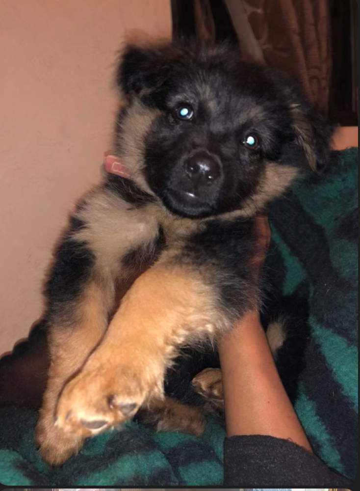
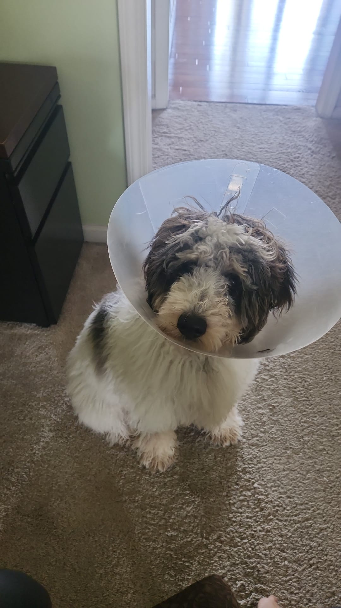
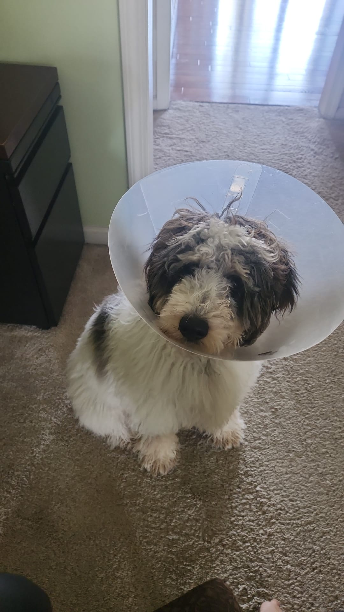

Pets
Palmer
Palmer, the 12-year-old black Yorkie Doodle, is a charming and endearing companion known for his sweet and gentle disposition. Despite his small stature, he leaves a big impression on everyone he meets. Palmer is a shy little guy, but his quiet demeanor only adds to his irresistible charm. He's not one to demand attention, but those who take the time to get to know him quickly fall in love with his loving nature.
Palmer's favorite pastime is lounging around, basking in the comfort of his cozy spot, often nestled in a sunbeam. He enjoys the simple pleasures in life, like curling up next to his loved ones and sharing his affection through gentle licks. His name, inspired by the legendary golfer Arnold Palmer, is a fitting tribute to his quiet grace and undeniable likability. In any social gathering or family gathering, Palmer steals the show, capturing the hearts of all who have the privilege of meeting him.
Photo Gallery


Likes
- Lounging in cozy spots
- Giving affectionate licks
- Enjoying quiet moments with loved ones
Bacon Q Dog

Bacon Q. Dog is a 9yr old labradoodle. He prefers to spend his days lounging among the three different beds/couches that his family has gifted him. He enjoys a walk or two around the neighborhood, as long as he can pretend that he doesn't see any of the other animals to avoid the embarrassment of not wanting to admit he has no wolf-like skills in chasing them.
At night just as the rest of the family is ready to relax, Bacon suddenly wants to release all of his energy. He will place his toys on a mini couch and frantically drag the couch around, giving his toys "a ride." There is also a lot of rolling. Lots and lots of rolling.
Photo Gallery


Likes
- Belly rubs
- Playing tug-of-war
- Sneaking onto the couch
Luna

Luna is a German shepherd mix and a fireball of energy. Oftentimes, destroying anything in her path she will take and hide all your socks, shoes, and clothes for her to chew on. She loves playing catch at the park, it always gives her the zoomies.
Luna is a very jealous, loving, and protective dog. She really embraces her inner chihuahua and will bark at any stranger, car, or noise at night. She makes the perfect guard dog. But she is not at all aggressive. Luna is all bark no bite!
Photo Gallery



Likes
- Chicken
- Going to the park
- Belly rubs
Maui

Maui is a two-year-old mini-doodle who thinks he is as big as a German shepherd. This mindset allows him to voice his opinion, especially when demanding food or attention. He is also a classic momma's boy, as he has learned if he is annoying enough, he can get anything he demands.
During his lounging time, he gets to the highest chair he can get on and stares outside, waiting either for guests or belly rubs. He also has the tendency to force his mother to go to sleep as soon as his father goes to bed.
Photo Gallery


Likes
- Car rides
- Being chased
- Sitting in high places
Mocha

Mocha is a very energetic little dog. His favorite activities are tug-of-war with toys, playing fetch with his orange ball, and laying on his dad’s lap. He has so much energy that in the evenings he tends to ‘get the zoomies’ in which he sprints in circles around the house without any stimulation.
When Mocha is done playing, he loves to lay down in an especially silly way. He lays on his belly with his rear paws pointed straight backwards as shown in the following photos. It’s his favorite way to recharge after a long day of play.
Photo Gallery


Likes
- Jumping on and off couch
- Running in circles
- Belly rubs
Cooky

Cooky is an 11 month old Bernedoodle. He likes to play, run around, go on walks, eat snacks and treats (not his own dog food), get pets and belly rubs, and cuddle. You can usually find him playing with his toys in the living room, chilling in the office room with my dad, or cooling off in the garage.
He’s still a baby, but he can get super hyper. Whenever someone rings the doorbell, Cooky gets really excited, barking and dashing towards the front door. He also jumps really high when he’s hyper and wags his tail like crazy. Overall, though, he likes to chill and cuddle just as much as he likes to play.
Photo Gallery

 


Likes
- Dog cookies
- Pets and belly rubs
- Running around the house
Milktea

Milktea is a Scottish fold with a personality of a princess. She loves her veggies and refuses to eat anything dropped on the ground. She makes it clear when she has a demand of any sort by complaining in a loud, distinguished manner. If what she says could be translated, it probably would be, “This is atrocious, the water container has been empty for the 3rd time this week. I want to see the manager.”
Despite her cuteness and royalty, she actually suffers from a genetic disorder intentionally brought upon by humans. I highly advise against keeping a Scottish fold because they are in constant pain when they reach around 2 years old. Cartilage accumulates around her paw joints and tail joints and it becomes painful for them to even walk. She is living evidence of human’s cruelty of breeding animals to look pretty while sacrificing the animals’ health.
Photo Gallery


Likes
- Individual corn kernels served on human hands
- Sitting royally on suitcases to claim ownership of her humans
- To be alone and sitting on soft surfaces